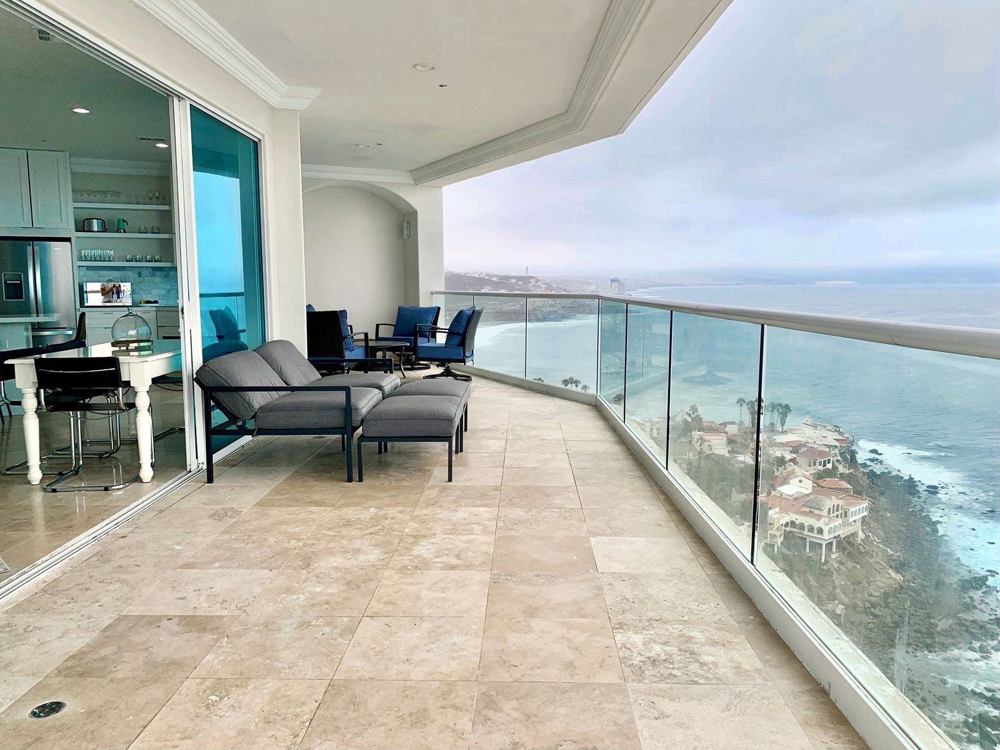
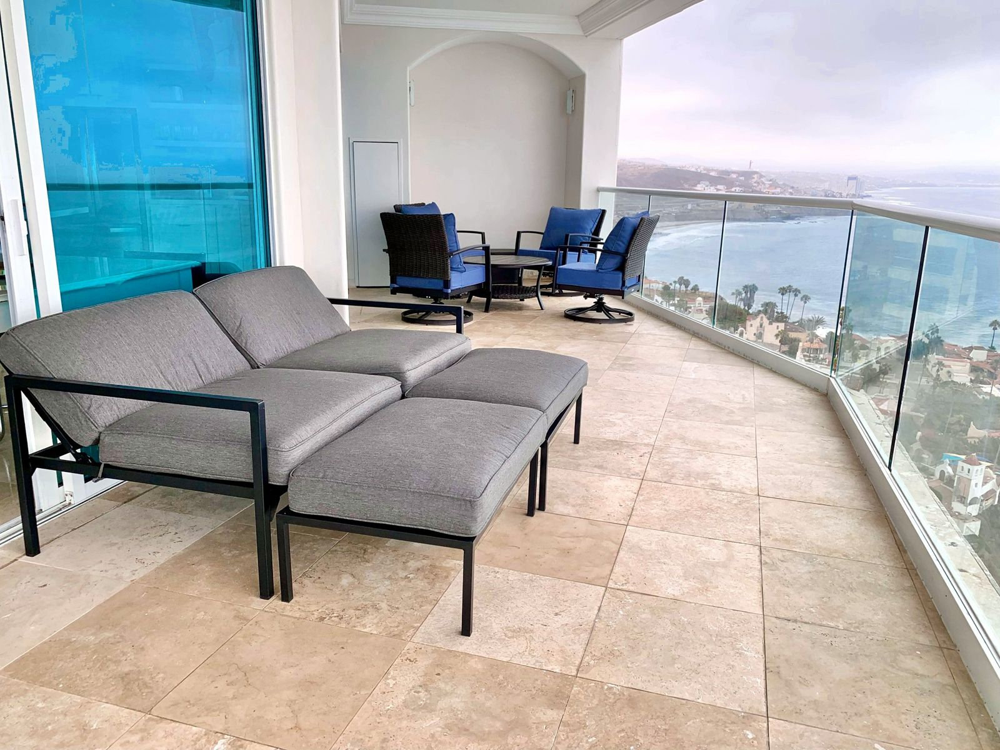
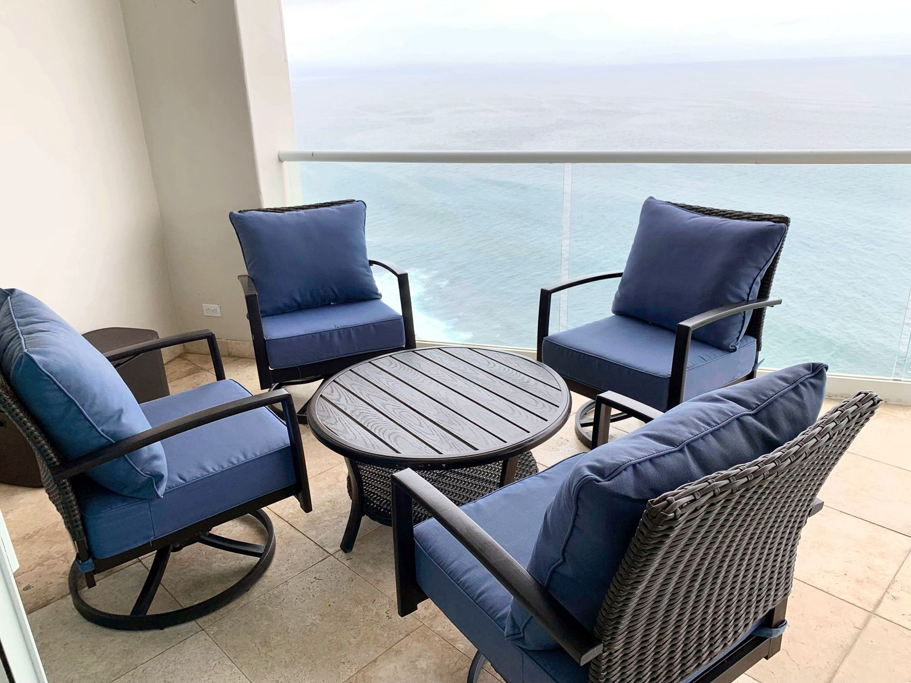
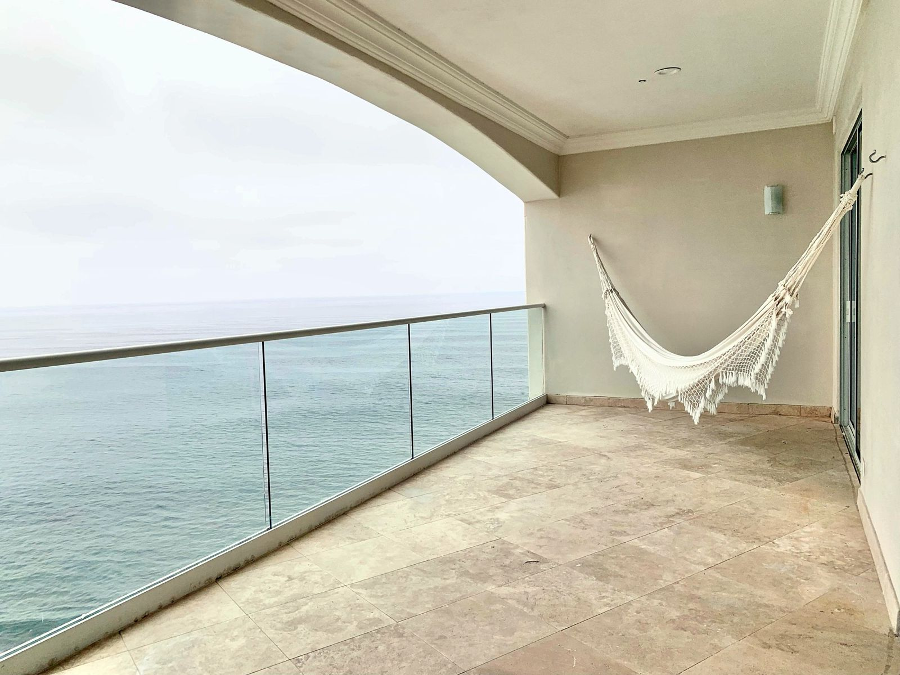
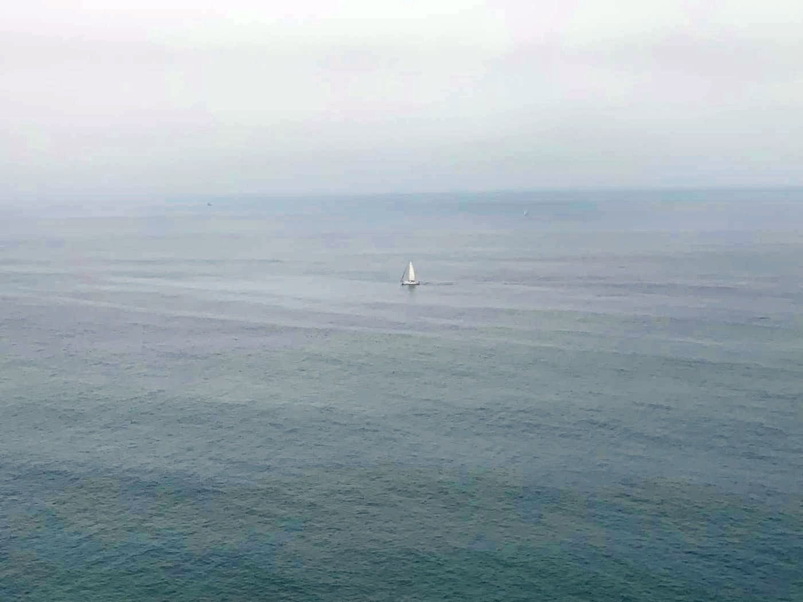
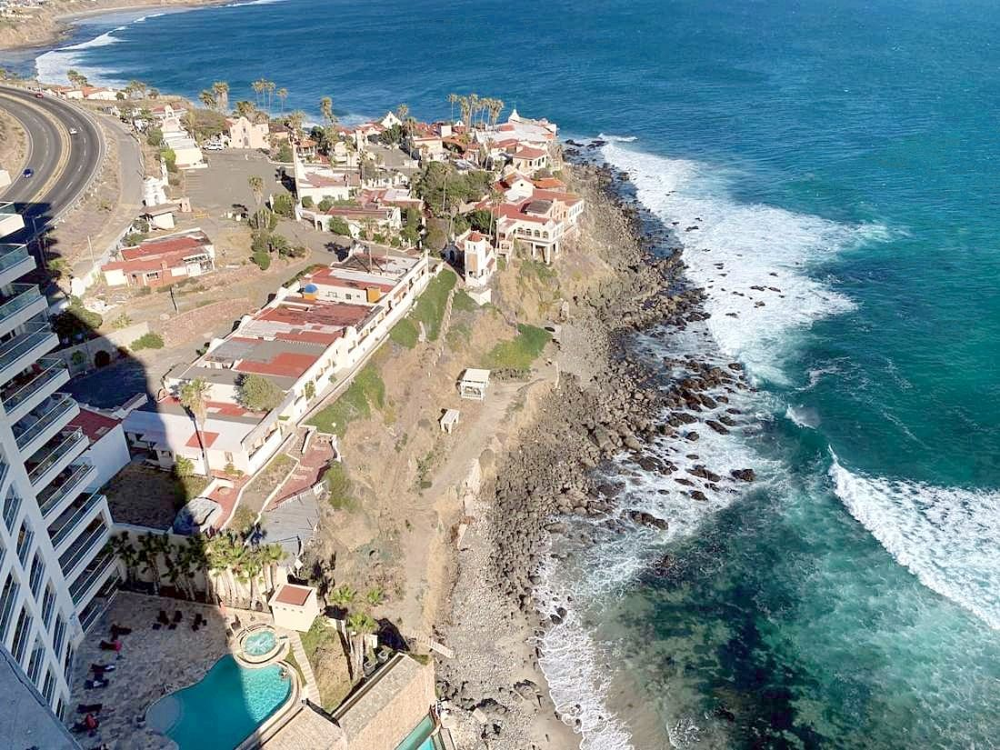

Terraza y vistas
Una amplia terraza techada envolvente con barandal de cristal, áreas de descanso y comedor, y vistas a la costa y al mar abierto.
703 pies² sobre el Pacífico
La terraza recorre la sala y ambas recámaras. Desde el piso 20 la vista abarca toda la costa de Rosarito.












